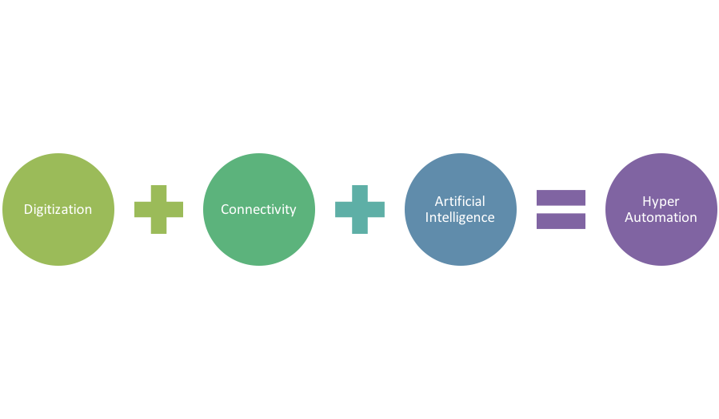
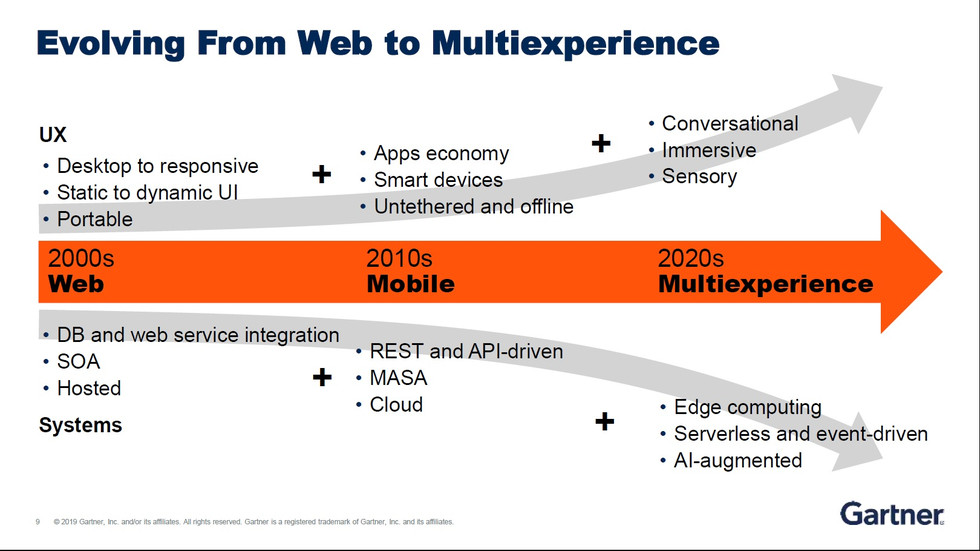
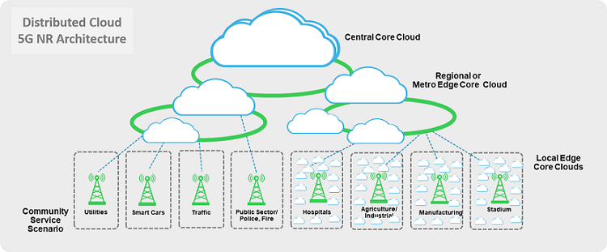

About Us
Strategic Consulting Services have been delivering IT Support and Consulting Services for 20+ years. We are continually upskilling our team and developing our Managed Services offering to ensure we continue to meet the needs of our customers.
We have a wide range of support and services available to suit businesses of all sizes. Our team are highly experienced and accredited and we approach each customer on an individualised basis to ensure that the service is tailored to meet their needs
Consulting Services:
- Hyperautomation
- Multiexperience
- Distributed Cloud
Hyperautomation
In the construction industry, hyper-automation can mean the ability to leverage advanced technology such as AI (artificial intelligence) and IoT (Internet of Things) to empower companies to transform how their business gets done. We're not talking about physical robots like many might be led to believe but an intelligent and automated approach to routine tasks that allows humans to focus on the important aspects of getting business done. You can find more information on hyperautomation here.
Multiexperience
The multiexperience trend will replace technology-literate people with people-literate technology. Instead of people getting accustomed to the evolving technologies, it will so happen that the technology will evolve to understand the people better. Multiexperience is about leveraging various modalities, digital touchpoints, apps, and devices to design and develop a seamless experience for the customers. The idea is to interact with the customers at as many touch points as possible to offer a consistent customer experience across the web, mobile, app, and other modalities. Gartner predicts that by 2023, more than 25% of the mobile apps, progressive web apps and conversational apps at large enterprises will be built and/or run through a multiexperience development platform. Multiexperience technology is a step ahead in the journey of complete digital transformation. As businesses are investing in state-of-the-art digital solutions to develop smooth experiences for their consumers, multiexperience may prove to be just the right catalyst for guaranteeing fruition. You can find more information on multiexperience here.
Distributed Cloud
Distributed cloud is the application of cloud computing technologies to interconnect data and applications served from multiple geographic locations. Distributed, in an information technology (IT) context, means that something is shared among multiple systems which may also be in different locations. Distributed cloud speeds communications for global services and enables more responsive communications for specific regions. Cloud providers use the distributed model to enable lower latency and provide better performance for cloud services. Beyond the cloud provider context, two other examples of distributed cloud are public resource computing and the volunteer cloud.You can find more information on multiexperience here.
